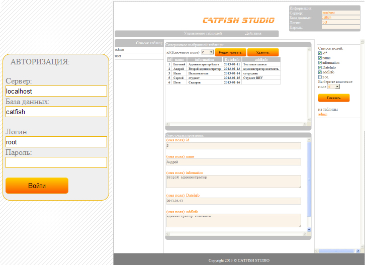

Система управления контентом
CMS CATFISH v 1.1

Система управления контентом Catfish CMS v 1.1 позволяет управлять любым сайтом, информация которого хранится в базе данных. Данная система не нуждается в настройках и специфической установке, достаточно перенести папку "admin" на хостинг сайта, и вы будете иметь возможность управлять всеми данными вашего сайта.
Зайти в администратор можно с помощью строки http://[ваш сайт]/admin/
затем вводите "имя сервера", "имя базы данных", "имя пользователя", и "пароль".